Utilisation et pilotage d'un serveur de clonage informatique FOG Server
19 May 2022 -
Utilisation et pilotage d’un serveur de clonage informatique FOG Server 1. Introduction ================
1.1. Composition du serveur FOG
- 1 X Serveur PXE(PRE EXECUTION ENVIRONNEMENT)
- 1 X Serveur TFTP(TRIVIAL FILE TRANSFERT PROTOCOL)
- 1 X Serveur NFS(NETWORK FILE SYSTEM)
- 1 X Serveur Apache2
- 1 X DHCP Proxy (DYNAMIC HOST CONFIGURATION PROTOCOL)
1.2. Matériel nécessaire
Dans mon cas ça sera :
- 1 X Raspberry Pi 4
- 1 X Disque dur externe USB3 HDD 2To
1.3. Connaissances requises
- Savoir paramétrer le BIOS d’un ordinateur
- Naviguer sur un navigateur internet
1.4. Schéma du réseau
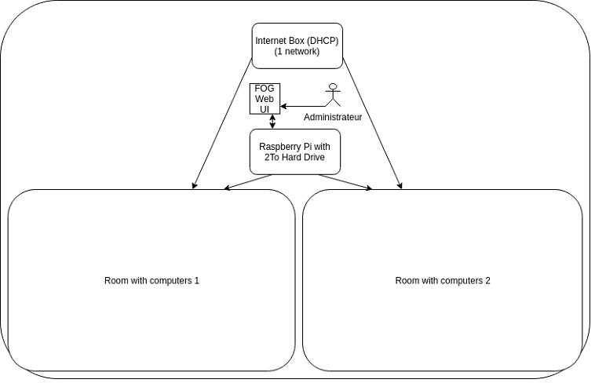
2. Développement
2.1. Présentation de l’interface
Connecter vous avec votre navigateur à l’adresse fournie lors de l’installation depuis votre réseau local de préférence sur la machine où vous avez installé FOG Serveur.
Entrez les identifiants fournis et connectez vous.
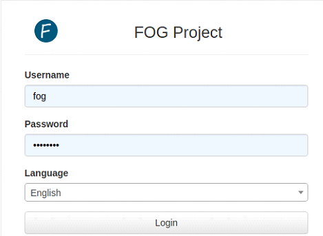
Une fois connecté vous accédez à cette interface :
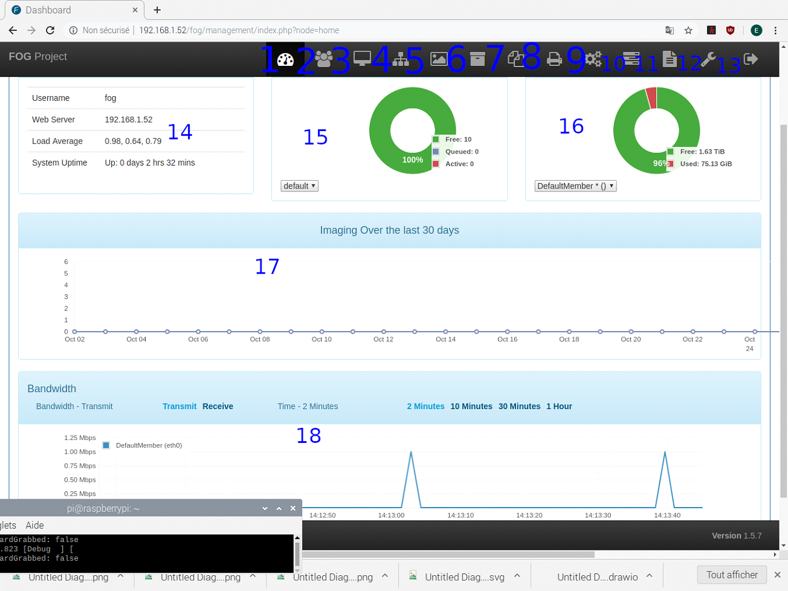
- 1. C’est la tableau principal, la page que nous visitons actuellement.
- 2. C’est la gestion des utilisateurs, on peut en créer de nouveaux, changer les mots de passe.
- 3. C’est la gestion des postes à cloner qu’ils soient source ou destination d’image disque.
- 4. C’est la gestion des groupes, ils permettent d’envoyer une image a plusieurs postes en même temps.
- 5. C’est la gestion des images disque, il faut les créer et les paramétrer afin de pouvoir sauvegarder dessus ou cloner depuis.
- 6. C’est la gestion des noeuds, nous n’en utilisons pas dans notre configuration actuelle.
- 7. C’est la gestion des Snapin, fonction inexplorée pour le moment.
- 8. C’est la gestion des imprimantes. Fonction inexplorée pour le moment.
- 9. C’est la gestion de la configuration de FOG pour les postes clients. Nous n’en avons pas besoin pour le moment.
- 10. C’est la gestion des tâches en cours, comme les déploiements. On peut y regarder la progression ou annuler une tâche.
- 11. C’est le reporting de FOG, pour voir un peut ce qu’il ce passe sur le serveur.
- 12. C’est la configuration serveur de FOG, nous n’en avons pas besoin pour le moment.
- 13. C’est l’icône de déconnexion de l’interface web.
- 14. C’est un panneau informatif indiquant l’adresse ip du serveur ainsi que sa charge.
- 15. Panneau informatif indiquant la charge disponible actuellement sur le serveur (nombre de place libres pour le déploiement).
- 16. Panneau informatique indiquant l’espace libre restant sur le disque dur.
- 17. Graphique représentant le nombre de déploiement d’images sur une durée.
- 18. Graphique représentant la charge réseau du serveur.
2.2. Préparation de déploiement
- 1. Activez les WOL (WAKE ON LAN) dans le BIOS des tous les postes et programmez leur extinction pour la nuit (programmation d’extinction optionnelle).
- 2. Activez le BOOT PXE sur tous les postes. L’ordre d’amorcage sera le suivant : CD/DVD, USB DRIVE, PXE BOOT, HDD/SSD.
- 3. Supposons que vous avez deux types de machines, 1 des macs, 2 des PC (doivent être le meme modèle) - Commencez par préparer sur les deux types de postes, sur une machine, l’image qui sera copiée sur tous les autres postes. Nous avons donc deux postes à préparer. 1 pour les macs 1 pour les PC. ( S’il y plusieurs modèles de macs ou de pc il faudra une image par modèle).
- 4. Une fois le poste prêt créons leurs images.
- 5. Connectez-vous à l’interface de FOG Serveur et cliquez sur “Images”(5), ensuite dans le menu de gauche cliquez sur “Create New Image” et remplissez les champs comme ceci par exemple.
Image Name : Image-1-PC-Salle-1 Operating System : Windows (Version) Ou Linux (je ne sais pas si ce champs est important ou est juste informatif) Image Type : Si votre poste possède plusieurs disques durs choisissez “Multiple partition images - All disks” si non choisissez “Single Disk” Image Manager : Partclone Uncompressed
- 6. Validez le formulaire en cliquant sur “ADD”
- 7. Recommencez l’opération pour la salle des macs en adaptant le système d’exploitation choisissez également un autre nom pour l’image et un autre chemin (PATH).
Cliquez sur “Images”(5) de l’interface puis cliquez sur “List All Image” dans le menu de gauche, vous devriez avoir quelque chose qui ressemble à ceci:
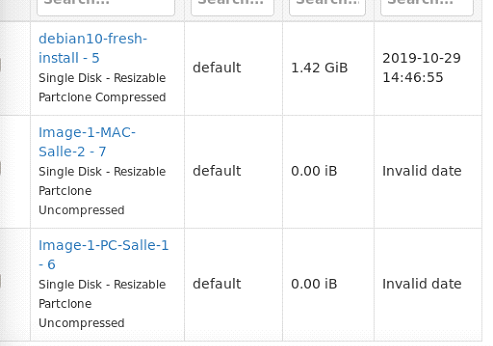
Ajoutons également les deux groupes pour les deux salles de machines :
- 1. Cliquez sur “Group”(4) et dans le menu de gauche cliquez sur “Create New Group”.
- 2. Remplissez comme suit : Group Name : Salle-1
- 3. Validez en cliquant sur “ADD”
- 4. Recommencez l’opération pour “Salle-2”
- 5. Cliquez sur “Groups”(4) et dans les menu de gauche cliquez sur “List All Groups”, vous devriez avoir ceci:
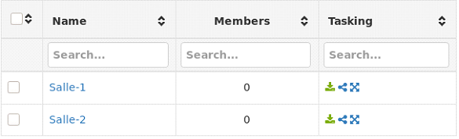
Remarque : J’ai ici organisé les groupes par salles car les modeles sont dans des salles différentes. Si vos modèles sont dans la même salle orgnisez les groupes par modèles et non par salle.
2.3. Ajout des deux machines maître vers le serveur
Opération à répéter sur les deux postes que vous avez préparé.
Démarrez les postes en PXE et arrivée dans le menu, avec les touches flêchées et la touche entrer séléctionnez “Perform Full Host Registration and Inventory”.
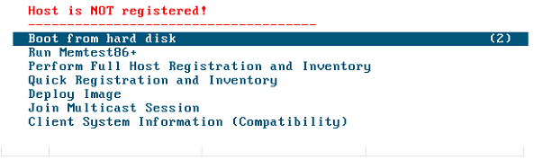
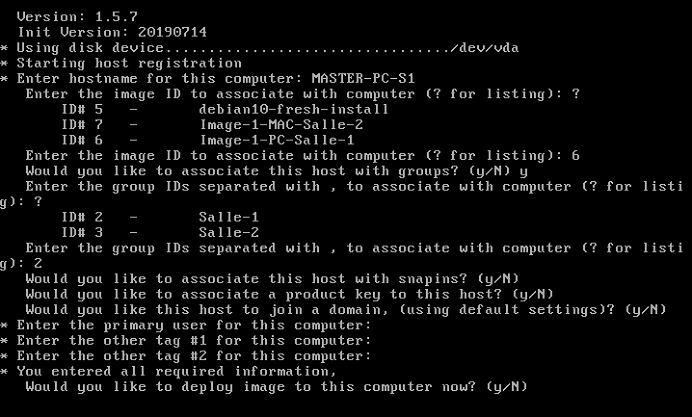
Séléctionnez un nom d’hôte pour la machine, si vous avez des serveurs dns maître le même nom. Séléctionnez l’identifiant de l’image associée au poste, entrez “?” pour avoir la liste ici ce sera 6 (Image-1-PC-Salle-1). Séléctionnez l’identifiant du groupe : ici 2 (Salle-1) Appuyez sur entrer pour les autres options jusqu’au redémarrage.
Après avoir redémarré vous devriez avoir ceci : “Host is registered as (HOSTNAME)”.
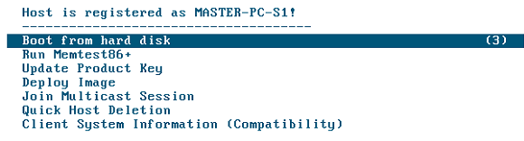
En regardant dans l’interface en cliquant sur “Hosts”(3) et “List All Hosts” dans le menu de gauche on peut voir ceci :
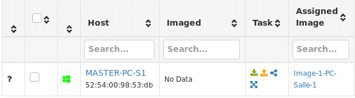
En cliquant sur “MASTER-PC-S1” et ensuite sur “Inventory” dans le menu du haut vous pouvez voir l’inventaire de votre machine:
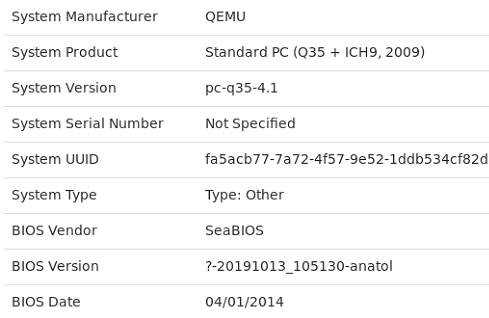
Pour enregistrer l’image disque des deux postes, commencez par les éteindre, ensuite cliquez sur la petitie icone orange avec la flêche vert le haut sur l’un des deux postes pour le sauvegarder. Vous devriez avoir ceci :
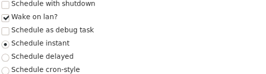
Certaines fonctions ne fonctionnent pas correctement dans ma version comme l’extinction de poste. Cochez “Wake On Lan” pour un démarrage automatique du poste et “Schedule Instant” pour indiquer de faire la sauvegarde maintenant. Enfin cliquez sur “Task” por valider, le poste démarre et vous devriez avoir ceci à l’écran :
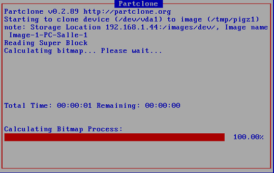
Une fois que le poste a fini de sauvegarder il redémarre, répétez l’opération avec l’autre machine.
Une fois les deux postes sauvegardés. Inscrivez les postes restants avec “Perform Full Host Registration” au démarrage comme précédemment pour les deux premiers postes.
Supposons que vous avez deux postes par salle. Après inscriptions de tous les postes vous devriez avoir ceci:
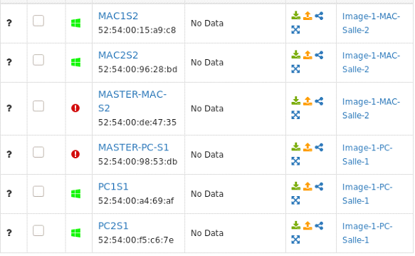
Cliquez sur “Groups”(4) cliques sur “List All Groups” Pour les déploiement multi-cast cliquez sur la troisième icone la bleue qui ressemble à “V retourné” Allez voir dans “Tasks”(10) et cliquez sur “Active Tasks” dans le menu de gauche, vous pourrez voir tous les postes prêts à être déployés.
3. Conclusion
Je vous laisse finir votre déploiement vous pouvez trouver plus de documentation sur le site officiel de FOG Project
Bon clonage.